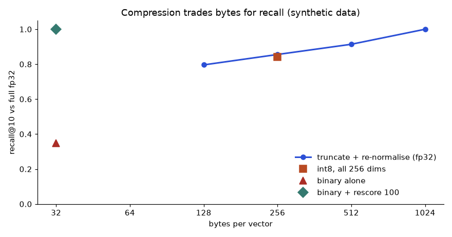

In Chapter 1 you built a keyword search. It failed in a quiet way: a user who types "my site is sluggish" will not find a page that says "slow response time", because no word matches. Embeddings fix this. An embedding turns a piece of text into a list of numbers, placed so that texts with similar meaning land close together. By the end of this chapter you will know what an embedding is, how to compare embeddings with cosine, dot product and distance, how to build a semantic search, and how to estimate the storage it needs. The transformer machinery inside embedding models is covered in the separate Deep Learning document (study/dl/); here we focus on using them.
Words you need first
| Word | Plain meaning |
|---|---|
| Vector | A list of numbers, like [0.2, -0.5, 0.9] |
| Dimension | How many numbers are in the vector (for example 384 or 768) |
| Embedding | A vector that represents the meaning of a word, sentence or image |
| Semantic | About meaning, not spelling |
| Normalise | Scale a vector so its length is 1 |
Our running example: a small help-desk knowledge base about slow websites, pets and databases. It is deliberately mixed so you can see what "close" means.
How it works. Word2Vec trains a small neural network to predict a word from its neighbours (or neighbours from the word). The network's internal numbers for each word become that word's vector. GloVe reaches a similar result by factorising a table of how often word pairs appear together. FastText also learns vectors for pieces of words (character n-grams), so it can build a vector for a misspelled or unseen word like "chekout". These are called static embeddings: every word has exactly one vector, whatever the sentence. That is their limit. "Bank" in "river bank" and "bank loan" gets the same vector.
Two famous properties: nearby vectors mean related words, and some directions carry meaning (king − man + woman is close to queen). Treat the second as a fun demonstration, not as a reliable tool.
A real, tiny demonstration without downloads. We cannot download pretrained models offline here, so we use LSA (latent semantic analysis): take the TF-IDF table from Chapter 1 and compress it with SVD (singular value decomposition, a way to keep only the strongest patterns) down to 3 dimensions. It is the same idea as word embeddings, "words that share company share direction", in miniature. Predict first: for the query kitten, which document will win? And for pet animals?
import numpy as np
from sklearn.feature_extraction.text import TfidfVectorizer
from sklearn.decomposition import TruncatedSVD
docs = ["the server is slow under heavy load","high latency during peak traffic",
"response time grows when many users connect","the cat sat on the warm mat",
"a kitten slept on the sofa","dogs and cats are popular pets",
"database queries need an index to be fast","slow sql query fixed by adding index",
"users complain the website is slow","my pet cat likes to sleep"]
tf = TfidfVectorizer(stop_words="english"); X = tf.fit_transform(docs)
svd = TruncatedSVD(n_components=3, random_state=0); E = svd.fit_transform(X)
E = E/np.linalg.norm(E,axis=1,keepdims=True) # make each vector length 1
print("shape",E.shape)
def search(q,k=3):
v = svd.transform(tf.transform([q])); v/=np.linalg.norm(v)
s = E@v[0]
for i in np.argsort(-s)[:k]: print(f" {s[i]:.3f} {docs[i]}")
for q in ["slow website performance","kitten","pet animals"]:
print(q); search(q)shape (10, 3)
slow website performance
0.972 users complain the website is slow
0.954 the server is slow under heavy load
0.712 response time grows when many users connect
kitten
1.000 a kitten slept on the sofa
0.417 slow sql query fixed by adding index
0.373 database queries need an index to be fast
pet animals
1.000 the cat sat on the warm mat
1.000 my pet cat likes to sleep
0.088 dogs and cats are popular petsRead it honestly. The first query worked: the third hit, "response time grows when many users connect", shares no word with the query except through the compressed space (it shares none of slow, website, performance), yet it ranks third with 0.712. That is the semantic effect. But the other two queries show the weakness of a tiny model: with only 10 documents and 3 dimensions, "pet animals" ranks the document that says "pets" last. (pets and pet are different words to TF-IDF, and with so little data the compressed space cannot link them.) Real embedding models are trained on enormous text, so they capture "pet" and "pets" and "cat" together. The mechanism is the same; the data scale is what makes it good.
Real-world mapping
| Item | Example | Where it appears |
|---|---|---|
| Static word vector | 300 numbers per word | Older NLP, keyword expansion, quick similarity |
| Out-of-vocabulary word | "chekout" | FastText handles it using pieces; Word2Vec cannot |
| Dimension | 3 here, 384 to 3072 in real models | Index size and speed |
Problem 2.1.1 Two word vectors are cat = [1, 2] and dog = [2, 3], and invoice = [3, −1]. Which word is closer to cat by cosine?
| Formula | cosine = a·b / (‖a‖ ‖b‖) |
|---|---|
| Plug in | cat·dog = 1×2 + 2×3 = 8; ‖cat‖ = √5 = 2.236; ‖dog‖ = √13 = 3.606 |
| Compute | cos(cat, dog) = 8 / (2.236 × 3.606) = 8 / 8.062 = 0.992. For invoice: cat·invoice = 3 − 2 = 1; ‖invoice‖ = √10 = 3.162; cosine = 1 / (2.236 × 3.162) = 0.141. |
| Answer | dog (0.992) is much closer to cat than invoice (0.141). |
| Check | Both values are between −1 and 1; cat and dog point in almost the same direction. |
| Why it matters | This is the whole mechanism of semantic search: pick the vectors with the highest cosine to the query. |
Problem 2.1.2 In the LSA run above the query "kitten" matched "slow sql query fixed by adding index" with 0.417. Is that a good result?
| Step 1 | Compare with the top score, 1.000 for the kitten document. A drop from 1.0 to 0.417 is large. |
|---|---|
| Step 2 | The 0.417 document has nothing to do with kittens. It scored because 3 dimensions force unrelated words to share directions. |
| Answer | It is noise. A score is only meaningful relative to the other scores and to a threshold you test on real data. |
| Check | The next result, 0.373, is almost the same: the ranking beyond the top hit is not informative. |
Connection to the real job. Static embeddings are rarely the final answer today, but the ideas (vectors, cosine, dimension) are exactly the ones used in the modern models of the next section. See the learner's Math PDF for cosine similarity and the vectors-and-dot-product basics.
Applications
Check yourself
Answer: One vector per word, regardless of context ("bank" has one vector).
Answer: Build vectors for unseen or misspelled words from character pieces.
Answer: No. It is only meaningful when compared with other scores for the same model.
BERT (Bidirectional Encoder Representations from Transformers) is an encoder model: it reads the whole sentence in both directions and produces one vector per token. It was trained by hiding some words and asking it to guess them. Variants include RoBERTa (trained longer), DistilBERT (smaller and faster), and DeBERTa (an improved attention design). How attention works inside is in the DL document.
But BERT gives one vector per token, and for search we need one vector per sentence. Sentence-BERT (SBERT), also called sentence-transformers, fine-tunes a BERT-like model so that whole sentences with similar meaning have similar vectors; it is trained with contrastive learning (pull matching pairs together, push non-matching pairs apart). Today "an embedding model" for search usually means this kind of model. Names you will meet: sentence-transformers models, BGE, E5, and hosted embedding APIs from providers such as OpenAI, Cohere and Voyage. Which one is best changes every few months: check the provider docs and a public leaderboard such as MTEB (Massive Text Embedding Benchmark), then test on your own data.
Hugging Face. transformers loads models, tokenizers splits text, datasets loads data, evaluate computes metrics, peft and trl fine-tune (Chapter 10), accelerate runs on many devices. A typical embedding call looks like the following. It was not run here (no model download); the library and method names are standard, but check the current docs for version differences.
# not run here: needs `pip install sentence-transformers` and a model download
from sentence_transformers import SentenceTransformer
model = SentenceTransformer("some-embedding-model-name") # pick one from the docs
vecs = model.encode(["my site is sluggish", "slow response time"],
normalize_embeddings=True)
print(vecs.shape) # (2, dimension)
print(float(vecs[0] @ vecs[1])) # cosine, because vectors are normalisedChoosing an embedding model (a checklist, no names needed).
| Question | Why it matters |
|---|---|
| Which languages does it support? | English-only models fail on Hindi or Tamil |
| What is the maximum input length? | Longer chunks get truncated silently |
| What dimension? | Bigger means more storage and slower search |
| Hosted API or open weights? | Privacy, cost, and offline use |
| Does it need prefixes like "query:" and "passage:"? | Some models require them; forgetting hurts quality |
| Licence? | Commercial use may be restricted |
Problem 2.2.1 An embedding model accepts at most 512 tokens. Your chunk has about 700 tokens. What happens, and what do you do?
| Step 1 | Most libraries truncate: only the first 512 tokens are embedded. |
|---|---|
| Step 2 | The last 188 tokens (27% of the chunk) are invisible to search, so a question about them will not find this chunk. |
| Answer | Re-chunk to around 300 to 400 tokens, or choose a model with a longer limit, and test retrieval. |
| Check | 700 − 512 = 188; 188/700 = 0.269. |
| Why it matters | Silent truncation is one of the commonest RAG bugs. |
Problem 2.2.2 Your multilingual help desk gets Hindi and English tickets. You embed both with an English-only model. What do you expect?
| Step 1 | The model has seen little Hindi, so Hindi sentences get poor, nearly random vectors. |
|---|---|
| Step 2 | An English query will not find the matching Hindi ticket, and two Hindi tickets about the same issue may not be close. |
| Answer | Use a multilingual embedding model, and build a small test set of Hindi and mixed queries to measure retrieval before launch. |
| Check | Measure recall@3 on the test set (Chapter 8): if Hindi recall is far below English, the model is not suitable. |
Fine-tuning for classification, NER and QA. An encoder like BERT can be fine-tuned: add a small output layer and train on your labelled examples. Use it for classification, NER (label each token as person, place, etc.) and extractive QA (find the answer span inside a passage). It is often cheaper and more accurate than prompting a big LLM for a fixed labelling job with plenty of labelled data. Compare against your TF-IDF baseline from Chapter 1: if BERT gains only 1 point of F1, the baseline may be the better engineering choice.
Connection to the real job. In interviews, "Which embedding model would you use and how would you decide?" is common. The honest answer is the checklist plus an evaluation on your own queries.
Applications
Check yourself
Answer: The sentence vector, because it is trained to represent the whole sentence's meaning.
Answer: Pulls similar pairs closer and pushes dissimilar ones apart.
Answer: Different models create different vector spaces.
Definitions.
cosine(a, b) = a·b / (‖a‖ ‖b‖) range −1 to 1, ignores length
dot(a, b) = Σ aᵢbᵢ grows with length
L2(a, b) = √ Σ (aᵢ − bᵢ)² 0 means identical
If ‖a‖ = ‖b‖ = 1 then L2² = 2 − 2·cosine and dot = cosineThat last line is why many vector databases store normalised vectors and use a fast dot product. Always follow your embedding model's documentation, because some models were trained for dot product and some for cosine.
Problem 2.3.1 Let u = [3, 4] and v = [4, 3]. Compute cosine, dot, L2, and then repeat after normalising.
| Formula | cosine = u·v / (‖u‖‖v‖); L2 = √Σ(uᵢ − vᵢ)² |
|---|---|
| Plug in | u·v = 12 + 12 = 24; ‖u‖ = ‖v‖ = 5 |
| Compute | cosine = 24/25 = 0.96; dot = 24; L2 = √(1 + 1) = 1.414. |
| Normalise | u′ = [0.6, 0.8], v′ = [0.8, 0.6]. dot(u′, v′) = 0.48 + 0.48 = 0.96. L2² = 0.04 + 0.04 = 0.08. |
| Answer | After normalising, the dot product equals the cosine (0.96). |
| Check | 2 − 2 × 0.96 = 0.08, which equals L2² for the normalised vectors. |
| Why it matters | It proves the three metrics agree for unit vectors, so you can choose the fastest. |
Problem 2.3.2 Run the same check on the vectors from the earlier code: a = [1,2,3], b = [2,4,6], c = [3,−1,0].
import numpy as np
a=np.array([1,2,3.]);b=np.array([2,4,6.]);c=np.array([3,-1,0.])
cos=lambda u,v:u@v/np.linalg.norm(u)/np.linalg.norm(v)
print(cos(a,b),cos(a,c), a@b, np.linalg.norm(a-b))1.0 0.08451542547285165 28.0 3.7416573867739413b is exactly 2 × a, so they point the same way: cosine 1.0, even though the L2 distance is 3.74 (√14).a and c are nearly perpendicular: cosine 0.085.Semantic search recipe.
The picture:
"my site is sluggish" (query vector Q)
\ small angle
\_____ "slow response time" cosine 0.8
\
\________ "reset your password" cosine 0.1 (large angle)The distance on the page is the angle: the smaller the angle, the higher the cosine, the better the match.
Storage and speed math (do this before choosing dimensions).
Problem 2.3.3 You have 1,000,000 chunks and a 768-dimension model storing 4-byte floats. How much memory do the vectors need? What if you use 8-bit integers?
| Formula | memory = count × dimension × bytes per number |
|---|---|
| Plug in | 1,000,000 × 768 × 4 |
| Compute | 1,000,000 × 768 = 768,000,000 numbers; × 4 bytes = 3,072,000,000 bytes = 3.07 GB. With 1 byte per number: 0.77 GB. |
| Answer | About 3.1 GB as float32, or 0.77 GB as int8, before any index overhead. |
| Check | 3.07 GB ÷ 4 = 0.77 GB, a factor of 4, matching 4 bytes versus 1 byte. |
| Why it matters | This tells you whether the index fits in RAM on one machine or needs a vector database service. |
Exact (brute force) search compares the query to every vector. For 50,000 vectors of 64 numbers it is fast (Chapter 6 measures it). At tens of millions of vectors it is too slow and you use approximate indexes.
Connection to the real job. Semantic search is the first feature most companies build with GenAI: "search our documents by meaning". The hard work is rarely the model; it is the evaluation set, the chunking and the index.
Applications
Check yourself
Answer: They are equal.
Answer: 500,000 × 384 × 4 = 768,000,000 bytes, about 0.77 GB.
Answer: They point the same way but have different lengths.
Three families of ideas matter in production search. Compression shrinks each vector. Late interaction (ColBERT) keeps several vectors per document instead of one. Two-stage retrieval uses a cheap bi-encoder to find 50 to 200 candidates and an expensive cross-encoder to order them. You met the bi-encoder in 2.2. Chapter 6 covers indexes and rerankers in the pipeline. Here we do the arithmetic.
Problem 2.4.1 You embed 10 million chunks with a 1,024-dimension model. Storage for fp32, fp16, int8 and 1-bit (binary) vectors?
| fp32 | 10,000,000 × 1,024 × 4 bytes = 40.96 GB. |
|---|---|
| fp16 | Half of that: 20.48 GB. |
| int8 | One byte per number: 10.24 GB. |
| binary | One bit per number: 1,024 / 8 = 128 bytes per vector, 1.28 GB. That is 32 times smaller than fp32. |
| Meaning | The fp32 index needs a big-memory machine. The binary one fits in the laptop's RAM. The question is how much recall you lose. |
n, d = 10_000_000, 1024
for name, bytes_per in [("fp32", 4), ("fp16", 2), ("int8", 1), ("binary", 1 / 8)]:
print(f"{name:7s} {n * d * bytes_per / 1e9:7.2f} GB")fp32 40.96 GB
fp16 20.48 GB
int8 10.24 GB
binary 1.28 GBNormal embeddings spread information evenly over all dimensions, so cutting a vector short wrecks it. A Matryoshka model (named after nesting dolls) is trained with a loss that also scores the first 64, 128, 256... numbers on their own, so the most important information is packed at the front. You can then truncate to the first k numbers and re-normalise to unit length. Several hosted and open embedding models advertise this feature. Check the model card before truncating a model that was not trained for it.
The next experiment uses synthetic vectors that mimic this property (the variance of each dimension falls as you move right). It shows the mechanism and the measurement method, and the numbers are not a benchmark of any real model. The recall here means: of the true top 10 under full fp32 search, how many does the compressed search also return?
import numpy as np
rng = np.random.default_rng(7)
N, D, Q = 5000, 256, 200
scale = 1.0 / np.sqrt(1 + np.arange(D) / 4.0) # front dims carry more signal
centres = rng.normal(size=(100, D)) * scale # 100 topics
docs = centres[rng.integers(0, 100, N)] + 0.35 * rng.normal(size=(N, D)) * scale
queries = docs[rng.choice(N, Q, replace=False)] + 0.15 * rng.normal(size=(Q, D)) * scale
def unit(x): return x / np.linalg.norm(x, axis=1, keepdims=True)
docs, queries = unit(docs), unit(queries)
def top10(scores): return np.argsort(-scores, axis=1)[:, :10]
truth = top10(queries @ docs.T)
def recall(found): return np.mean([len(set(a) & set(b)) / 10 for a, b in zip(truth, found)])
for k in (256, 128, 64, 32):
d2, q2 = unit(docs[:, :k]), unit(queries[:, :k])
print(f"first {k:3d} dims bytes/vec fp32={k*4:5d} recall@10 vs full = {recall(top10(q2 @ d2.T)):.3f}")
lo, hi = docs.min(), docs.max()
qi = lambda x: np.round((x - lo) / (hi - lo) * 255 - 128).astype(np.int8)
sc = qi(queries).astype(np.int32) @ qi(docs).astype(np.int32).T
print(f"int8 (all 256 dims) bytes/vec={D:5d} recall@10 vs full = {recall(top10(sc)):.3f}")
bd, bq = np.sign(docs), np.sign(queries)
print(f"binary sign bits bytes/vec={D//8:5d} recall@10 vs full = {recall(top10(bq @ bd.T)):.3f}")first 256 dims bytes/vec fp32= 1024 recall@10 vs full = 1.000
first 128 dims bytes/vec fp32= 512 recall@10 vs full = 0.914
first 64 dims bytes/vec fp32= 256 recall@10 vs full = 0.856
first 32 dims bytes/vec fp32= 128 recall@10 vs full = 0.796
int8 (all 256 dims) bytes/vec= 256 recall@10 vs full = 0.842
binary sign bits bytes/vec= 32 recall@10 vs full = 0.347
How to read it: Move left to spend fewer bytes. The blue curve (truncate, then re-normalise) falls from 1.00 at 1,024 bytes to 0.80 at 128 bytes. The orange point is int8 at 256 bytes and scores 0.84 here, because a single global scale gives the small, late dimensions only a few levels (a scale per dimension would score better). The red point is binary codes alone, 32 bytes, with recall 0.35. The green point shows the fix: take 100 candidates from the binary index and rescore them with fp32, and recall is 1.00 again. Pick the cheapest point that meets your target, then confirm on real queries.
unit() does above.Compressed search is used as a cheap first filter. Fetch 5 to 10 times more candidates than you need (say 100 for a top 10), then rescore those few with the full fp32 vectors, which you keep on disk. This usually recovers most of the lost recall for a small cost, because rescoring 100 vectors is trivial.
import numpy as np
rng = np.random.default_rng(7)
N, D, Q = 5000, 256, 200
scale = 1.0 / np.sqrt(1 + np.arange(D) / 4.0)
centres = rng.normal(size=(100, D)) * scale
docs = centres[rng.integers(0, 100, N)] + 0.35 * rng.normal(size=(N, D)) * scale
queries = docs[rng.choice(N, Q, replace=False)] + 0.15 * rng.normal(size=(Q, D)) * scale
unit = lambda x: x / np.linalg.norm(x, axis=1, keepdims=True)
docs, queries = unit(docs), unit(queries)
truth = np.argsort(-(queries @ docs.T), axis=1)[:, :10]
bits_scores = np.sign(queries) @ np.sign(docs).T
for over in (1, 3, 10):
hits = 0
for i in range(Q):
cand = np.argsort(-bits_scores[i])[: 10 * over] # cheap binary filter
best = cand[np.argsort(-(docs[cand] @ queries[i]))[:10]] # fp32 rescore
hits += len(set(best) & set(truth[i])) / 10
print(f"fetch {10*over:3d} candidates, rescore, recall@10 = {hits / Q:.3f}")fetch 10 candidates, rescore, recall@10 = 0.347
fetch 30 candidates, rescore, recall@10 = 0.743
fetch 100 candidates, rescore, recall@10 = 1.000A bi-encoder squeezes a whole passage into one vector, which loses detail. ColBERT keeps one small vector per token. To score a query against a document, take each query token, find its best-matching document token (the maximum cosine), and add up those maxima. This is MaxSim. It lets "battery" in the query match "battery" in a long passage without being diluted by 300 unrelated words. The cost is storage: a 100-token passage needs 100 vectors, not 1 (usually of 128 dimensions with compression).
Problem 2.4.2 Compute the MaxSim score by hand. The query has two tokens, q1 = (1, 0) and q2 = (0, 1). Document A has token vectors a1 = (0.9, 0.1) and a2 = (0.2, 0.8). Document B has b1 = (0.6, 0.6) and b2 = (0.5, 0.5). Use plain dot products (vectors are given as is).
| Rule | score = sum over query tokens of the maximum dot product with any document token. |
|---|---|
| Doc A, q1 | q1·a1 = 0.9, q1·a2 = 0.2. Max = 0.9. |
| Doc A, q2 | q2·a1 = 0.1, q2·a2 = 0.8. Max = 0.8. Score A = 0.9 + 0.8 = 1.7. |
| Doc B, q1 | q1·b1 = 0.6, q1·b2 = 0.5. Max = 0.6. |
| Doc B, q2 | q2·b1 = 0.6, q2·b2 = 0.5. Max = 0.6. Score B = 1.2. |
| Meaning | A wins because each query token finds a strong partner. B is vaguely related to both. Averaging the document tokens into one vector gives A = (0.55, 0.45) and B = (0.55, 0.55), and the same dot products then score A at 1.0 and B at 1.1, so the single vector ranks B first by mistake. |
import numpy as np
Q = np.array([[1, 0], [0, 1]], float)
A = np.array([[0.9, 0.1], [0.2, 0.8]])
B = np.array([[0.6, 0.6], [0.5, 0.5]])
def maxsim(q, d): return (q @ d.T).max(axis=1).sum()
print("A", round(maxsim(Q, A), 2), "B", round(maxsim(Q, B), 2))
print("single-vector (mean) A:", (Q @ A.mean(0)).sum(), " B:", (Q @ B.mean(0)).sum())A 1.7 B 1.2
single-vector (mean) A: 1.0 B: 1.1Problem 2.4.3 Storage for late interaction. 1 million passages of 120 tokens, 128 dimensions per token, stored in fp16. Compare with one 1,024-dim fp16 vector per passage.
| ColBERT | 1,000,000 × 120 × 128 × 2 bytes = 30.72 GB. |
|---|---|
| Single vector | 1,000,000 × 1,024 × 2 bytes = 2.05 GB. |
| Ratio | 15 times more. Real systems cut this with 2-bit residual compression and pruning, but it explains why late interaction is used where precision on rare terms is worth the disk. |
A bi-encoder embeds query and document separately, so document vectors are computed once and searched with an index. A cross-encoder feeds the query and one document into the model together and outputs a relevance score. It sees every word pair, so it is more accurate, but nothing can be precomputed: scoring N documents means N model calls.
Problem 2.4.4 A cross-encoder takes 12 ms per (query, passage) pair on your GPU. You have 1 million passages. Compare scoring everything with reranking only the top 100 from a bi-encoder (which takes 10 ms).
| Score everything | 1,000,000 × 12 ms = 12,000 s = 3.3 hours per query. Unusable. |
|---|---|
| Two-stage | 10 ms + 100 × 12 ms = 1,210 ms, about 1.2 s. Batching the 100 pairs on a GPU usually brings it under 300 ms. |
| Meaning | This is why you always see a cheap retriever followed by a reranker. Raising the candidate count from 100 to 200 doubles reranker cost and often adds only a little recall (Chapter 6 shows how to measure this). |
print("all:", 1_000_000 * 12 / 1000 / 3600, "hours")
for k in (50, 100, 200):
print(k, "candidates:", 10 + k * 12, "ms (unbatched)")all: 3.3333333333333335 hours
50 candidates: 610 ms (unbatched)
100 candidates: 1210 ms (unbatched)
200 candidates: 2410 ms (unbatched)| Pattern | Formula or code |
|---|---|
| Cosine | a·b / (‖a‖‖b‖) |
| Unit vectors | L2² = 2 − 2·cos |
| Memory | N × dim × bytes |
| Semantic search | scores = E @ q; top = argsort(-scores)[:k] |
| Normalise | v / np.linalg.norm(v) |
Problem 2.P.1 (easy) Cosine of [1,0] and [0,1]? Answer: 0 (perpendicular).
Problem 2.P.2 (easy) Cosine of [2,2] and [5,5]? Answer: 1.0, same direction.
Problem 2.P.3 (computation) a=[1,1], b=[1,0]. Find the cosine. Answer: a·b = 1; ‖a‖ = √2; ‖b‖ = 1; cosine = 1/1.414 = 0.707.
Problem 2.P.4 (computation) 2 million vectors, 1024 dimensions, float16 (2 bytes). Memory? Answer: 2,000,000 × 1024 × 2 = 4,096,000,000 bytes, about 4.1 GB.
Problem 2.P.5 (what is the output?) E rows are unit vectors and q is a unit vector. What does E @ q return? Answer: The cosine of each row with the query.
Problem 2.P.6 (find the bug) A team embeds documents with model A, later switches the query side to model B "because it is newer", and recall drops to near zero. Why? Answer: The two models produce different vector spaces. Re-embed all documents with model B.
Problem 2.P.7 (computation) Unit vectors with cosine 0.9. What is the L2 distance? Answer: L2² = 2 − 1.8 = 0.2, so L2 = 0.447.
Problem 2.P.8 (scenario) Search over product reviews returns a good top-1 but nonsense from rank 4 onwards. What do you do? Answer: Return fewer results or apply a score threshold chosen from labelled data, and consider reranking (Chapter 6).
Problem 2.P.9 (interview) Why is cosine preferred over Euclidean distance for text embeddings? Answer: Text length changes vector length in many models, and cosine ignores length, so it compares direction (meaning). For normalised vectors they rank identically anyway.
Problem 2.P.10 (interview) How would you pick an embedding model for an Indian-language help desk? Answer: Shortlist multilingual models from public benchmarks, check licence and token limit, build 50 to 100 real queries with known answers in each language, measure recall@k and MRR, and choose the cheapest model that meets the target.
2.P.A. (Easy) Bytes for 2 million 768-dim int8 vectors?
Answer: 2,000,000 × 768 × 1 = 1.536 GB.
2.P.B. (Easy) A binary vector from 1,024 dimensions takes how many bytes?
Answer: 1,024 bits / 8 = 128 bytes.
2.P.C. (Medium) MaxSim with q1 = (1, 0), q2 = (0, 1) and a document with tokens (0.3, 0.9) and (0.8, 0.2). Score?
Answer: q1: max(0.3, 0.8) = 0.8. q2: max(0.9, 0.2) = 0.9. Score = 1.7.
2.P.D. (Medium) Why do you re-normalise after truncating a Matryoshka embedding?
Answer: The truncated vector has a length below 1. Without re-normalising, dot product no longer equals cosine similarity and scores depend on how much signal happened to sit in the kept dimensions.
2.P.E. (Hard) You must search 200 million chunks at 1,024 dimensions within 64 GB of RAM. Choose a design.
Answer: fp32 needs 819 GB, int8 205 GB, binary 25.6 GB. Binary codes fit. Use a binary index to fetch 100 to 200 candidates per query, rescore them with int8 or fp32 vectors stored on SSD, then rerank the top 50 with a cross-encoder. Measure recall@10 against a full-precision run on 1,000 real queries before launch.
2.P.A. (Easy) Bytes for 2 million 768-dim int8 vectors?
Answer: 2,000,000 × 768 × 1 = 1.536 GB.
2.P.B. (Easy) A binary vector from 1,024 dimensions takes how many bytes?
Answer: 1,024 bits / 8 = 128 bytes.
2.P.C. (Medium) MaxSim with q1 = (1, 0), q2 = (0, 1) and a document with tokens (0.3, 0.9) and (0.8, 0.2). Score?
Answer: q1: max(0.3, 0.8) = 0.8. q2: max(0.9, 0.2) = 0.9. Score = 1.7.
2.P.D. (Medium) Why do you re-normalise after truncating a Matryoshka embedding?
Answer: The truncated vector has a length below 1. Without re-normalising, dot product no longer equals cosine similarity and scores depend on how much signal happened to sit in the kept dimensions.
2.P.E. (Hard) You must search 200 million chunks at 1,024 dimensions within 64 GB of RAM. Choose a design.
Answer: fp32 needs 819 GB, int8 205 GB, binary 25.6 GB. Binary codes fit. Use a binary index to fetch 100 to 200 candidates per query, rescore them with int8 or fp32 vectors stored on SSD, then rerank the top 50 with a cross-encoder. Measure recall@10 against a full-precision run on 1,000 real queries before launch.
You are my patient, practical professor. I am a working professional moving into data roles (data, ML and AI); I study about one hour a day and English is my second language, so use simple words and define jargon. My topic is: Embeddings, similarity metrics (cosine, dot product, L2) and semantic search. Explain this topic step by step from first principles using an everyday analogy, then a worked example with real numbers. After each step, ask me one question to check I understood before continuing.
You are my patient, practical professor. I am a working professional moving into data roles (data, ML and AI); I study about one hour a day and English is my second language, so use simple words and define jargon. My topic is: Embeddings, similarity metrics (cosine, dot product, L2) and semantic search. Give me 8 graded exercises on this topic, from easy to hard, with small numbers and a few code-reading questions. Do NOT give solutions until I reply with my answers; then mark them and explain my mistakes.
You are my patient, practical professor. I am a working professional moving into data roles (data, ML and AI); I study about one hour a day and English is my second language, so use simple words and define jargon. My topic is: Embeddings, similarity metrics (cosine, dot product, L2) and semantic search. Quiz me one question at a time on this topic, about 12 questions in total. Wait for my answer, say whether it is right, explain briefly, and adapt the difficulty to my answers. At the end summarise my weak points.
You are my patient, practical professor. I am a working professional moving into data roles (data, ML and AI); I study about one hour a day and English is my second language, so use simple words and define jargon. My topic is: Embeddings, similarity metrics (cosine, dot product, L2) and semantic search. Review my work on this topic. I will paste my code, my calculation or my explanation below. Check it for errors, explain each error in simple words, and show a corrected version. Then give me one follow-up exercise. [PASTE HERE]
You are my patient, practical professor. I am a working professional moving into data roles (data, ML and AI); I study about one hour a day and English is my second language, so use simple words and define jargon. My topic is: Embeddings, similarity metrics (cosine, dot product, L2) and semantic search. Run a mock interview on this topic for a GenAI or data role in India. Ask 6 questions of rising difficulty, one at a time, including one scenario question and one 'find the bug' question. After each answer give a score out of 10 and a model answer. Focus especially on cosine versus dot versus L2 and the memory cost of vector indexes.